00Do We Need Objective Morality?Morality, Between Us
Your progress0/39Decisions answeredFollow-ups may add questions
Look around · read the exhibits · decide · see what your answers commit you to
An argument in 12 rooms
Morality, between us.
Do we need objective moral facts to settle how we treat each other?
Do we need objective moral facts to settle how we treat each other? This exhibit argues that we don’t: the reasons we can give the people affected, plus an honest account of the pressures that shape our judgment, can do every job we need morality to do. It does not try to prove that objective moral facts don’t exist. It tries to show we never have to rely on them, and it says plainly where that claim is weakest.
36 decisions · 10 jobs on your ledger · three real cases · 36 principles · (asks for your strongest objection at each step)
The 3D view is unavailable on this device. Rooms and In this room give every exhibit, decision and principle. The reading version is below.
The reading version
Morality, between us.
Do we need objective moral facts to settle how we treat each other? This exhibit argues that we don’t: the reasons we can give the people affected, plus an honest account of the pressures that shape our judgment, can do every job we need morality to do. It does not try to prove that objective moral facts don’t exist. It tries to show we never have to rely on them, and it says plainly where that claim is weakest.
Each room tests one job that objective moral facts are said to be needed for. You decide each time. At the end you will see your own ledger of jobs and your answers to the opening questions side by side.
When people disagree about how to treat each other, do we need objective moral facts (truths that hold whatever anyone thinks or agrees) to settle it?
The claim
No. Two things are enough: the reasons we can give to the people a choice affects, reasons they could accept if well informed, free to object and treated as equals; and an honest account of the pressures (fear, loyalty, scarcity, authority, distance) that push judgment around.
What it does not claim
It does not prove objective moral facts don’t exist. It claims nothing in human moral life depends on knowing whether they do, much as astronomers stopped needing a hand of God to explain the planets without first disproving it.
How it is tested
Objectivists say their facts are needed for at least seven jobs: explaining our moral feelings, making cruelty more than taste, settling disagreement, showing a whole society can be wrong, ruling out terrible agreements, binding people who don’t care, and making sense of our own reasoning. Each gets a room, plus three real cases.
Where it is weakest
Ruling out terrible agreements (room 05) and duties to people who cannot take part, such as future generations and animals (room 09). There the answer without objective facts is plausible but not decisive.
Words used in this exhibit
Objective moral fact
A moral truth that would hold no matter what anyone thinks, feels or would agree to, even if everyone, reasoning carefully and fairly, concluded otherwise. Philosophers call belief in such facts moral realism; this exhibit calls its supporters objectivists.
Reasons between people
The view that what we owe each other is settled by the reasons we can give the people our choices affect: reasons they could accept if they were well informed, free to object and treated as equals. It is not a vote, and not whatever people happen to agree to today. Philosophers call versions of it contractualism or discourse ethics (Scanlon, Habermas).
Pressures
Forces that push how people judge without being reasons: fear, scarcity, loyalty to a group, obedience to authority, wanting to fit in, distance from the people affected, self-interest. They help explain why people judge as they do. On their own they don’t show what is right.
A job
Something objectivists say morality cannot do without objective facts. For each job you say whether it needs objective facts, or whether reasons and pressures cover it.
Your ledger
Your answers on each job, collected at the end. If any job truly needs objective facts, the exhibit’s claim fails there.
Principle
A plain sentence you can choose to carry, such as “Agreement isn’t enough.” Your opening answers pre-select some. Kept principles appear beside later decisions they bear on.
How to read the labels
Situation
A concrete case to think with.
Definition
An idea used throughout, explained in plain terms.
Evidence
A documented fact or research finding, within its stated limits.
For objectivity
The strongest case that this job needs objective moral facts.
Without objectivity
The best answer that does the job without them.
Still open
What neither side has settled.
Pressures
Forces that shaped what people did, which are not reasons.
Reasons
What could, or could not, be justified to the people affected.
Each choice shows, in grey, what it commits you to. Open it to read what the answer means. A few answers make a step that doesn’t follow, or claim more than the evidence shows; these are marked. Holding a view, whether objectivist or not, is never marked as a mistake.
The twelve opening questions
In the interactive version you can start by saying how far you agree with each statement (strongly disagree, disagree, not sure, agree, strongly agree). Each is tested in one room. When you reach that room, the principle that matches your answer is already selected, and later decisions show whether they fit it or pull against it. At the end you answer the same statements again and see what moved.
Some things are wrong no matter what anyone thinks, feels or agrees.Tested in: Do We Need Objective Morality?
When I feel strongly that something is wrong, I can usually trust that feeling.Tested in: Where Do Moral Feelings Come From?
If nearly everyone in a society agrees that something is right, then for them it is right.Tested in: Is It Just Opinion, Then?
People’s moral views are shaped by their circumstances more than they realise.Tested in: Why Do Decent People Disagree?
One person can be right about a moral question even when everyone around them disagrees.Tested in: Can a Whole Society Be Wrong?
It can be right to cause one person serious harm if it gives small benefits to very many people.Tested in: Can a Fair Agreement Be Terrible?
Someone who doesn’t care about morality is still bound by it.Tested in: Why Should Someone Who Doesn’t Care Listen?
Adults should be free to take serious risks with their own bodies, even when experts think it unwise.Tested in: Case: Tuskegee and Consent
Wrongdoers should get what they deserve, even if punishing them prevents no future harm.Tested in: Case: What Is Punishment For?
People not yet born matter as much as people alive today.Tested in: Case: The Ozone Layer and People Not Yet Born
On hard moral questions, more than one answer can be reasonable.Tested in: Objections That Remain
A rule is only fair if I could explain it to the people it affects and they could reasonably accept it.Tested in: Where Do You Stand?
00 · Do We Need Objective Morality?
A plain question, three ideas, and where you stand now.
This room sets out the question the whole exhibit asks, explains the three ideas it uses, and records where you stand before you begin.
The situation
Two neighbours argue about refugee families who have just arrived and need housing. One says the town owes them help: they fled danger and the town has empty homes. The other says the town’s first duty is to its own residents, some of whom are already waiting for housing. Both are calm, informed and sincere. Is one of them right? And if so, what makes them right?
Idea 1: objective moral facts Definition
Some people believe there are moral truths that hold no matter what anyone thinks, feels or would agree to, in the way 2 + 2 = 4 holds whatever we believe. If so, one neighbour is simply right, even if nobody could ever convince the other. Philosophers call this view moral realism; here we call its supporters objectivists. Many careful thinkers hold it, including Derek Parfit, David Enoch and Michael Huemer, and each room begins with their strongest case.
Another view says what we owe each other is settled by the reasons we can give to the people our choices affect: reasons they could accept if they were well informed, free to object and treated as equals. This is not a vote and not whatever people agree to today. A whole town can fail to give the newcomers reasons they could accept, and then it is wrong, however many residents agree. Thinkers in this tradition include T. M. Scanlon and Jürgen Habermas.
Judgments are pushed by forces that are not reasons: fear, scarcity, loyalty to our group, obedience to authority, wanting to fit in, and distance from the people affected. Psychology shows these pressures can be strong. In Milgram’s experiment, 26 of 40 people obeyed an instruction to give what they believed were dangerous shocks. Pressures help explain why the neighbours see the same case differently. They don’t show which neighbour is right, but they show where to look for mistakes.
Reasons between people, plus an honest account of the pressures, can do everything we need morality to do: condemn cruelty, settle disputes, show a whole society can be wrong, and guide a person deciding alone. Objective moral facts may or may not exist. The claim is that we never need to rely on them. When Napoleon asked the astronomer Laplace where God was in his account of the planets, Laplace is said to have answered: “I had no need of that hypothesis.” He hadn’t disproved God; he had made God unnecessary to the astronomy. This exhibit attempts the same for objective moral facts.
How the test works Definition
Objectivists say their facts are needed for particular jobs. Each room takes one job, gives the strongest case that it needs objective facts, then the best answer without them. You decide. Your decisions build a ledger of jobs. If any job truly needs objective facts, the claim fails there, and the exhibit will say so. Your opening answers also pre-select principles, so you can see where your later decisions fit them and where they pull against them.
Decide
Before you begin: what do you think now about objective moral facts?
There is no right answer. Your choice is recorded so you can compare it with where you end up.
They exist, and we need them to settle how we treat each other.Each room will ask whether its job really needs them.
This is the objectivist position. The exhibit takes it seriously: every room starts with its strongest case. If your later answers show some job can’t be done without objective facts, that counts against the exhibit’s claim.
A good place to start. Your ledger at the end may tell you more than this question can.
You see teenagers set fire to a cat for fun. You immediately think: that’s wrong. What best explains why you think so?
This is the philosopher Gilbert Harman’s example. Pick the explanation that seems best; the next rooms test each one.
I’m seeing a moral fact: the act really is wrong, whatever anyone thinks.Room 01 asks whether that fact is needed to explain your reaction.
This is how many objectivists describe it, and Sturgeon defends it. Room 01 asks whether the moral fact adds anything to the explanation beyond the cruelty itself.
The cat suffers for nothing, and no one could give a reason for that which the rest of us could accept.Your explanation uses no objective fact. Room 02 tests whether it is strong enough.
This is the reasons-between-people answer. Notice that it explains why the act is wrong, not just why you react.
I was raised, and probably built, to react to cruelty this way.This explains the reaction. Room 01 asks whether it can also show the reaction is right.
This is the psychological explanation Harman favours. It leaves open whether the reaction is correct, which is the next question.
Some mix of these.You keep several explanations in play.
Reasonable. As the rooms go on, notice which part of the mix does the work.
Back to the two neighbours. If neither can convince the other, what then?
This question links to room 03, which is about disagreement.
One of them is still right, even if no one can ever show it.You think the answer exists independently of any argument. Room 03 asks how anyone could find it.
This is a natural objectivist view. The challenge is knowledge: if no one can ever show who is right, the answer can’t guide the town.
There is no right answer; it’s a clash of preferences.Room 02 tests whether this view can still condemn the cat-burners.
If there is never a right answer, the cat case is a clash of preferences too. Most people resist that, and room 02 explains why you don’t have to accept it even without objective facts.
Opening statement tested here: “Some things are wrong no matter what anyone thinks, feels or agrees.” Agreeing pre-selects one principle below; disagreeing pre-selects the other.
Some things are wrong, full stop
“I hold that some things are wrong whatever anyone thinks or agrees.”
This is the objectivist starting point. Keeping it means it will be shown beside later decisions it bears on, with a note when an answer fits it or pulls against it. Saying that a job doesn’t need objective facts does not pull against it: facts can exist without being needed.
Pre-selected if you agree with the opening statement above.
“I hold that right and wrong come from people and their reasons, not from facts beyond them.”
This is the starting point the exhibit tests. Keeping it means it will be shown beside later decisions it bears on, with a note when an answer fits it or pulls against it.
Pre-selected if you disagree with the opening statement above.
“If a job really does need objective facts, I’ll say so, whichever side I started on.”
A principle of honesty for the whole exhibit. Keeping it means it will be shown beside later decisions it bears on, with a note when an answer fits it or pulls against it.
Where this room ends up
The question is not whether morality matters, or whether some answers are better than others. Both sides agree on that. The question is what makes an answer better: a fact beyond everyone, or reasons the people affected could accept.
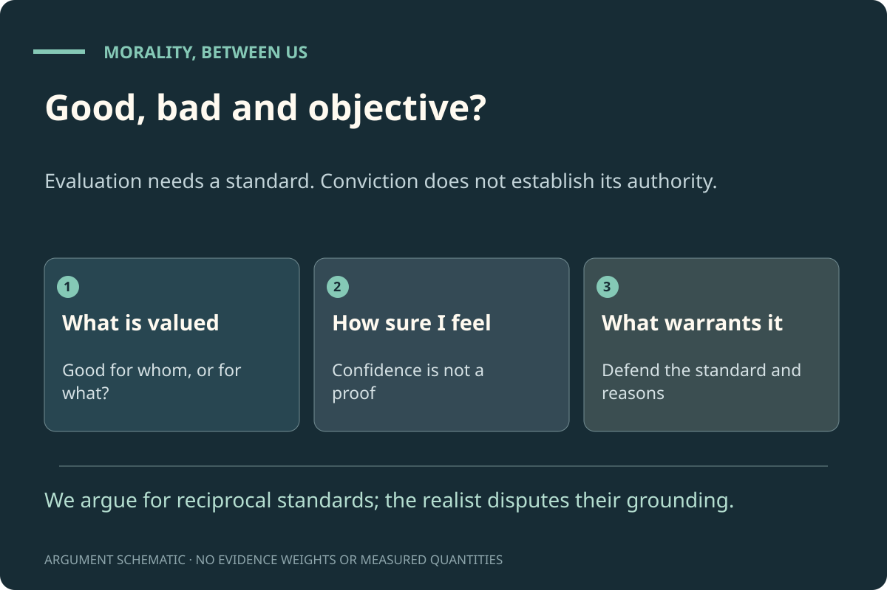
Do we need objective morality?. The question every room tests, and the three ideas it uses. The claim: reasons plus pressures do every job; objective facts are never needed. Authored diagram; it shows no measured quantities or simulated outcomes.
01 · Where Do Moral Feelings Come From?
If we can explain the feeling, do we still need the fact?
In the first room you said what you think explains your reaction to cruelty. This room asks whether that explanation needs objective moral facts. It starts with evidence about monkeys and babies, because if moral feelings are partly built in by evolution, that matters for both sides.
The situation
You feel, instantly and strongly, that hurting a cat for fun is wrong. Where does that feeling come from? There are two very different answers. One: you are noticing a moral fact, the way you notice that the cat is in pain. Two: evolution, upbringing and the cat’s suffering cause the feeling, and no further fact is involved.
The monkey and the cucumber Evidence
In a famous 2003 experiment, capuchin monkeys traded tokens for food. Some refused a piece of cucumber after watching a partner get a grape for the same work. Many people read this as an inborn sense of fairness. The later evidence is mixed. A 2024 analysis pooling 23 studies across 18 species found no clear overall effect in this kind of test, and found that refusals rose whenever better food was simply in view, which suggests disappointment rather than unfairness. A 2025 bonobo study and a 2026 chimpanzee study did find responses to unequal treatment in some conditions; a 2026 study of four primate species found none when unfairness happened only some of the time.
A large 2025 replication across many labs did not find the well-known result that babies of 5 to 10 months prefer “helpers” to “hinderers”. A 2026 study found that babies of 14 to 15 months expect people who help each other to have caring relationships. Across 60 societies, an anthropology study found that behaviours which help cooperation (helping family, reciprocating, sharing, keeping promises, being fair) are everywhere judged good. Plain upshot: some building blocks of moral life are probably old and widely shared. How much is built in, and how much is learned, is unsettled.
The case for needing the fact: Sturgeon and Huemer For objectivity
Nicholas Sturgeon replied to Harman that we often explain things by moral facts, and the explanations seem good. “Hitler did what he did because he was depraved.” “Opposition to slavery grew because slavery was so bad.” If those explanations work, moral facts earn a place, just as unseen particles do in physics. Michael Huemer adds a historical argument: over centuries, moral views have moved in one broad direction, against slavery, torture and cruelty to outsiders. People slowly discovering objective truths would explain that trend.
The answer without it: Harman and Street Without objectivity
Gilbert Harman argued that we never need moral facts to explain moral reactions. The teenagers’ cruelty, plus your psychology and upbringing, explain your reaction completely. Sturgeon’s examples can be restated the same way: Hitler acted from hatred, paranoia and the pressures of his movement. Sharon Street adds a sharper point. Evolution shaped our moral feelings because they helped our ancestors survive and cooperate, not because they matched facts that hold whatever anyone thinks. If such facts exist, our feelings would match them only by luck. Huemer’s trend has another explanation too: more people gained the power to object (room 04).
2025: bonobos responded to unequal rewards even when a machine, not a person, handed out the food, which is harder to explain as disappointment with the experimenter.
It shows monkeys have the same sense of justice that we do.You read a full human concept into one behaviour.
This step doesn’t follow. This step doesn’t follow. Throwing food away can come from disappointment at seeing better food, and the pooled evidence for an unfairness effect is weak. A reaction like this might be a building block of fairness, but it doesn’t show a sense of justice.
It tells us nothing at all about human morality.You set animal evidence aside entirely.
That may go too far the other way. Even if this test is weak, the question of whether our moral feelings have an evolutionary history stays open, and the infant and cross-cultural evidence bears on it.
Ledger · Explaining where moral feelings come from
Do we need objective moral facts to explain why people have moral feelings at all?
This is the first job on your ledger. Harman says no: psychology, evolution and upbringing are enough. Sturgeon says moral facts belong in some good explanations, just as particles do in physics.
Yes. Some reactions are best explained by the act really being wrong.Ledger: this job needs objective facts. You’ll need to say what the fact adds beyond the cruelty itself.
You side with Sturgeon. The challenge you take on: in each example, say what the moral fact explains that the non-moral facts (the cruelty, the suffering, the people’s psychology) do not.
No. The cruelty, our psychology and our upbringing explain the reaction fully.Ledger: this job is covered without objective facts. It does not yet show the reaction is correct.
You side with Harman. Notice what you have not claimed: that the reaction is mistaken. Explaining where a feeling comes from leaves open whether it is a good guide. Room 02 takes that up.
Psychology explains most reactions, but the long trend against slavery and cruelty needs more.Ledger: partly. Room 04 tests Huemer’s trend directly.
You take Huemer’s progress argument seriously. Room 04 offers a rival explanation of that trend (the excluded gaining a voice). You can compare them there.
Fair enough. The next question, about evolution, may help: it asks what follows if our feelings were shaped for survival.
Suppose evolution shaped your feeling that cruelty is wrong. Does that make the feeling untrustworthy?
Street’s argument is not “evolved, therefore false”. It is that evolution had no reason to make our feelings match facts that hold whatever we think, so a match would be luck.
Yes. If evolution shaped it, it is just an illusion.You treat where a feeling came from as proof that it’s false.
This step doesn’t follow. This step doesn’t follow. Evolution also shaped our sense of depth and of number, and those are not illusions. Where a belief comes from doesn’t settle whether it is true. Street’s real argument is narrower, and it is aimed at objectivism specifically.
No. If evolution built it in, it must be right.You treat being evolved as proof of being right.
This step doesn’t follow. This step doesn’t follow either. Evolution also built in suspicion of strangers and favouritism towards our own group. Being evolved doesn’t make a reaction right.
It is a good guide to what people like us can justify to each other, but it would be a lucky accident if it matched facts that hold whatever anyone thinks.You accept Street’s dilemma. It counts against objectivism more than against the reasons-between-people view.
This is Street’s position. It doesn’t say your feeling is wrong. It says the feeling is trustworthy for a job that doesn’t need objective facts. If you also said earlier that your reaction reveals an objective fact, the tool will ask how the two fit.
Evolution favoured noticing real harms and benefits, so our feelings can track moral facts after all.You give the objectivist reply. It needs moral facts to line up with harms and benefits.
This is the main objectivist answer to Street (Railton’s naturalism is one version). Notice that harms and benefits are also exactly what the reasons-between-people view uses. The question becomes whether the extra fact does any work.
Opening statement tested here: “When I feel strongly that something is wrong, I can usually trust that feeling.” Agreeing pre-selects one principle below; disagreeing pre-selects the other.
Trust strong reactions
“When I feel strongly that something is wrong, I take that as good evidence.”
Strong reactions often track real harms. Keeping it means it will be shown beside later decisions it bears on, with a note when an answer fits it or pulls against it.
Pre-selected if you agree with the opening statement above.
“I treat a strong moral feeling as a reason to look closer, not as proof.”
Feelings can carry information, and can also carry habit and bias. Keeping it means it will be shown beside later decisions it bears on, with a note when an answer fits it or pulls against it.
Pre-selected if you disagree with the opening statement above.
“I won’t claim more from a study than it actually showed.”
A rule for every evidence card in the exhibit. Keeping it means it will be shown beside later decisions it bears on, with a note when an answer fits it or pulls against it.
Evolution, upbringing and the situation seem able to explain why we have moral feelings without any extra moral fact. Sturgeon’s reply is serious, but his explanations can usually be restated without one. Explaining a feeling is not the same as showing it is correct, though. That is the next room.
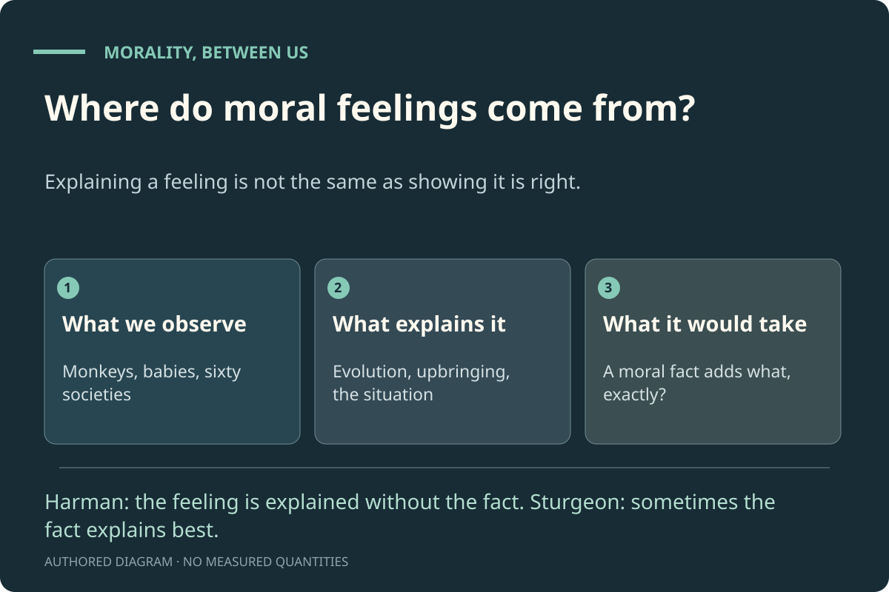
Where do moral feelings come from?. Explaining a feeling is not the same as showing it is right. Harman: the feeling is explained without the fact. Sturgeon: sometimes the fact explains best. Authored diagram; it shows no measured quantities or simulated outcomes.
02 · Is It Just Opinion, Then?
If there is no objective fact behind it, why isn’t morality just taste?
Last room: evolution, upbringing and the situation may explain our moral feelings without an extra moral fact. That raises the obvious worry. If nothing objective stands behind our moral views, isn’t morality just taste, like preferring chocolate to vanilla?
The situation
A man kills a stranger who is no threat to him, to take his car. Compare that with someone who prefers chocolate ice cream to vanilla. If there are no objective moral facts, are these the same kind of thing?
The case for needing the fact For objectivity
Objectivists argue that only an objective fact can make “killing a stranger for his car is wrong” more than “I dislike it”. Derek Parfit held that if nothing matters objectively, then nothing truly matters at all: agony would be bad only because someone happens to dislike it. On this view, any account without objective facts slides, in the end, into taste.
The answer without it: someone is on the receiving end Without objectivity
A taste concerns only you. The killing takes everything from someone else, who could not agree to it. The killer can offer him no reason except “I wanted the car”, a reason the killer would never accept if their places were swapped. That is what makes it wrong on the reasons-between-people view: not anyone’s feeling, but the fact that there is no reason the victim could accept (Scanlon). Simon Blackburn adds that we can still say “it would be wrong even if everyone approved”. That sentence is a moral judgment about killing, not a report about approval.
Philosophers who deny objective moral facts outright, such as J. L. Mackie and Richard Joyce, do not conclude that killing is like ice cream. Doubting objective facts does not mean “anything goes”. What stays open: if the killer replies “I don’t care about reasons the victim could accept”, what then? That is room 06.
Is “killing a stranger for his car is wrong” the same kind of claim as “chocolate is better than vanilla”?
The first question in this room. Your answer shows what you think separates morality from taste.
No. The killing is wrong as an objective fact; the taste isn’t.The difference rests on an objective fact. The next question asks whether anything else could mark it.
This is the objectivist answer. The next question asks whether the difference can be marked without an objective fact.
No. The killing does something to someone else that can’t be justified to them; a taste doesn’t.The difference rests on the victim, not on an objective fact.
This is the reasons-between-people answer. A taste has no victim; the killing does, and the victim could be given no reason they could accept.
Yes. If there are no objective facts, both are just preferences.You treat denying objective facts as making morality taste.
This step doesn’t follow. This step doesn’t follow. A taste affects no one else; the killing destroys someone else’s life for a reason they could never accept. Even philosophers who deny objective moral facts outright (Mackie, Joyce) don’t conclude that killing is like choosing ice cream.
I’m not sure what the difference is.Keep the question open.
The exhibits on either side of this room offer two ways of marking the difference.
Ledger · Making cruelty more than a matter of taste
Do we need objective moral facts to make the killing wrong, not merely disliked?
On the reasons-between-people view, it is wrong because the killer has no reason the victim could accept. Objectivists reply that something must make the victim’s life matter in the first place.
Yes. Without an objective fact that the victim matters, “no reason he could accept” is just another attitude.Ledger: needed. This is the strongest objectivist point; room 05 tests it.
You have put your finger on the deepest objectivist worry: that “reasons people could accept” quietly assumes people matter objectively. Room 05 is built to test exactly this.
The victim’s suffering is objectively bad; the rest (rights, fairness, what we owe) can be worked out between people.Ledger: partly. A mixed view: an objective floor, with the rest worked out between people.
This is a coherent middle position, and close to where the exhibit itself ends up being weakest. Room 05 returns to it.
No. The victims still couldn’t be given a reason they could accept. Approval doesn’t change that.You hold that the wrong doesn’t depend on approval, without relying on an objective fact.
This answer rests on what the victims could accept, not on what people think. That is how the reasons-between-people view can say “wrong even if everyone approved” (Blackburn). Room 04 tests this against real history.
Yes. If everyone approved, it would be right for them.This is relativism. Room 04 will ask whether slavery was then right where it was approved.
This is a coherent position, and it takes other cultures seriously. Its cost is that whatever a whole society approves becomes right for it. Room 04 asks whether you accept that for slavery.
Room 04 offers a real historical case to think with.
Principles in this room
Opening statement tested here: “If nearly everyone in a society agrees that something is right, then for them it is right.” Agreeing pre-selects one principle below; disagreeing pre-selects the other.
Each society decides
“I accept that what a society agrees on is right for that society.”
This is moral relativism. It respects other cultures, and it has costs that rooms 02 and 04 test. Keeping it means it will be shown beside later decisions it bears on, with a note when an answer fits it or pulls against it.
Pre-selected if you agree with the opening statement above.
“I won’t call something right just because most people agree with it.”
Objectivists and the reasons-between-people view both hold this; only “whatever a society says” rejects it. Keeping it means it will be shown beside later decisions it bears on, with a note when an answer fits it or pulls against it.
Pre-selected if you disagree with the opening statement above.
“I can be unsure what makes cruelty wrong and still oppose it fully.”
Uncertainty about foundations is compatible with firm commitments. Keeping it means it will be shown beside later decisions it bears on, with a note when an answer fits it or pulls against it.
The difference between cruelty and taste is that cruelty is done to someone, who cannot be given any reason they could accept. That difference does not need an objective fact. The objectivist’s remaining point is that something must make the victim matter in the first place; room 05 presses it hardest.
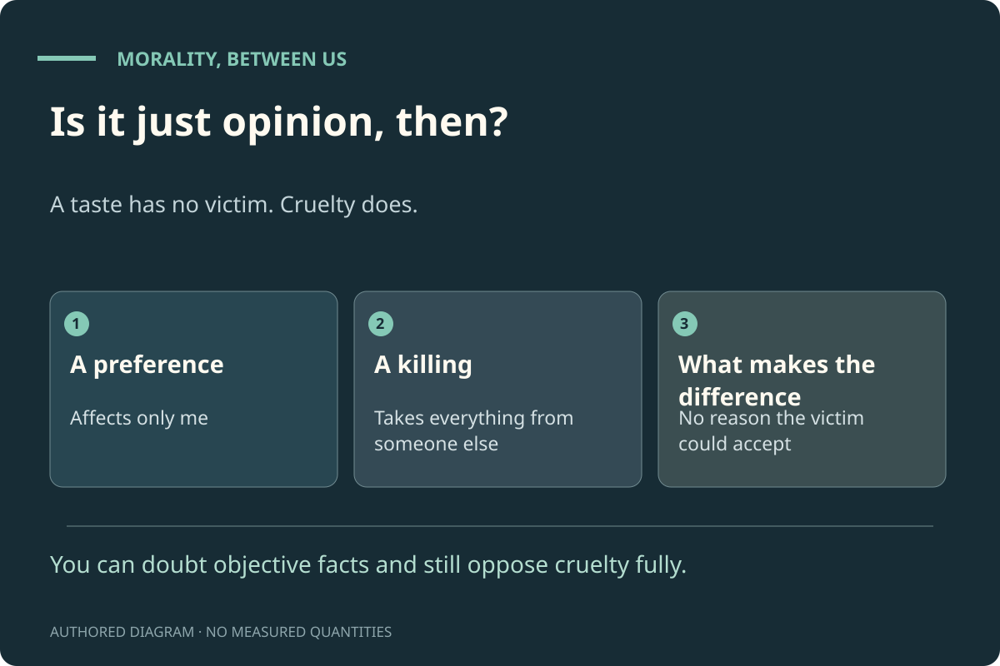
Is it just opinion, then?. A taste has no victim. Cruelty does. You can doubt objective facts and still oppose cruelty fully. Authored diagram; it shows no measured quantities or simulated outcomes.
03 · Why Do Decent People Disagree?
Pressures, reasons and what could settle a dispute.
Last room: what makes cruelty wrong may be that no reason could be given to the victim. But decent people disagree about much harder cases than murder. This room asks what explains moral disagreement, and what could settle it.
The situation
Back to the town with empty homes. In this invented town, residents’ answers swing with circumstance. When local jobs are scarce, or after a frightening news story, more residents say no to the refugee families. Among residents who have met the families, more say yes. Fear, scarcity and contact all push the same people in different directions.
What pushes judgment Evidence
Research shows pressures at work. Instructed by an authority, most of Milgram’s participants kept going. Trainee ministers who were told they were late mostly walked past a person in distress (Darley and Batson). Contact between groups is associated with less prejudice across hundreds of studies (Pettigrew and Tropp). People across the political spectrum weigh care, fairness, loyalty, authority and purity differently (Graham, Haidt and Nosek). The Moral Topology model, a companion to this exhibit, is a demonstration of how such pressures can move judgment between narrower and wider circles of concern.
The case for needing the fact: someone must be mistaken For objectivity
Objectivists say disagreement is just what we would expect if there is a fact we are struggling to see, as in science. David Enoch adds an argument from fairness. If a moral dispute were only my preference against yours, there would be no fair way to settle it: why should either of us give way? Only if there is a fact can a compromise be fair rather than arbitrary.
The answer without it: expose the pressures, then compare reasons Without objectivity
Much disagreement comes from different pressures and different information, not from different access to a hidden fact. Change the pressure (meet the families, ease the scarcity) and judgments move. What is left once the pressures are exposed is a disagreement about reasons, and that can be worked on: what could the families accept, and what could the residents already waiting accept? Where reasons run out, a procedure both sides could accept as fair settles what to do (Habermas, Rawls). David Wong argues that more than one answer can be reasonable, though not every answer is. Enoch’s fairness worry is answered by the procedure itself: we can tell a fair compromise by whether each side had a real say and an answer, without first knowing a hidden fact.
Meeting people corrects a mistake: those who haven’t met them are judging a stereotype.You treat contact as removing a bias.
Anderson argues something like this. You will still need reasons to say which view is the biased one; the residents who said no will say the same of the others.
It shows both views are just products of circumstance, so neither is right.You treat “influenced” as meaning “wrong”.
This step doesn’t follow. This step doesn’t follow. That a judgment was influenced doesn’t show it is mistaken: scientists’ beliefs are influenced by what they happened to see, too. The question is whether the influence improved or distorted the judgment.
To explain and settle disagreements like this one, do we need objective moral facts?
Enoch says that without a fact, any settlement is just the stronger side winning. The reasons-between-people view says fairness is visible in how the decision is made.
Yes. Unless one side is objectively right, any settlement is just the stronger side winning.Ledger: needed. This is Enoch’s fairness argument.
You side with Enoch. The challenge you take on: say how the town could tell which side is objectively right, if careful, informed people still disagree.
That’s a legitimate answer. It will show on your ledger as an open question.
Suppose that after every pressure is exposed and every reason heard, the residents still disagree. What should the town do?
The hard remainder. Every view needs an answer to this.
Use a decision procedure everyone could accept as fair, and keep the decision open to review.The Habermas and Rawls answer. Room 05 tests whether a fair procedure can still agree to something terrible.
This settles what to do without claiming the losing side was mistaken. The open question is room 05: can a fair procedure produce a terrible result?
Find out which side is objectively right, and do that.You look for the objective answer. You’ll need to say how to find it.
How? If careful, informed people still disagree, you need a way to tell who sees the fact. If you can’t say what it is, the answer can’t guide the town.
Take a majority vote. That settles what is right.A vote can settle what to do. Saying it settles what is right is a further claim.
A vote can settle what the town does. If it also settles what is right, then a majority could make it right to turn the families away for any reason at all. Room 04 tests that.
More than one answer may be acceptable. Pick one fairly and look after whoever loses out.You accept more than one reasonable answer (David Wong’s pluralism).
This takes the disagreement seriously without treating either side as simply mistaken. The work then is fairness to the side that loses.
Opening statement tested here: “People’s moral views are shaped by their circumstances more than they realise.” Agreeing pre-selects one principle below; disagreeing pre-selects the other.
Name the pressure
“In a dispute, I try to name what is pushing each side, including me.”
Pressures such as fear, loyalty, scarcity and authority shape judgment. Keeping it means it will be shown beside later decisions it bears on, with a note when an answer fits it or pulls against it.
Pre-selected if you agree with the opening statement above.
“I take people’s moral views as the product of their own reasoning.”
This respects people as reasoners. Keeping it means it will be shown beside later decisions it bears on, with a note when an answer fits it or pulls against it.
Pre-selected if you disagree with the opening statement above.
“I ask what the other side could accept, not only what I want.”
The working core of the reasons-between-people view. Keeping it means it will be shown beside later decisions it bears on, with a note when an answer fits it or pulls against it.
Pressures explain much disagreement, and exposing them is half the work of settling it. The rest is comparing reasons each side could accept, and using a fair procedure where reasons run out. Enoch’s fairness argument is the strongest reply; the exhibit’s answer is that fairness is visible in the procedure, not in a hidden fact.
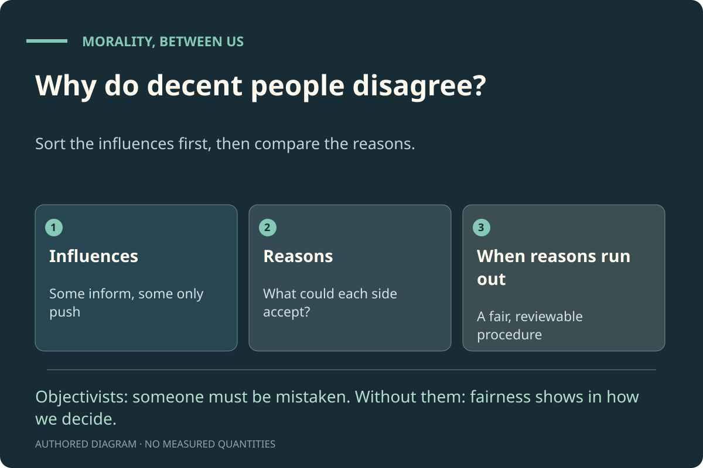
Why do decent people disagree?. Expose the pressures first, then compare the reasons. Objectivists: someone must be mistaken. Without them: fairness shows in how we decide. Authored diagram; it shows no measured quantities or simulated outcomes.
04 · Can a Whole Society Be Wrong?
Slavery, consensus and how societies learn.
Last room: disagreement can be explained by pressures and worked on with reasons. But what if there is no disagreement? What if a whole society agrees on something terrible? Objectivists say this is where their facts become indispensable.
The situation
For most of recorded history, slavery was legal and widely accepted. In the Atlantic world it was defended by law, religion and economics. Free people who benefited from it rarely questioned it. Was it wrong then, in places where nearly every free person accepted it? And if so, what made it wrong?
How slavery was challenged Evidence
Slavery was challenged above all by the people it was done to. The first country to abolish slavery permanently was Haiti, after the only successful slave revolt in history. Elsewhere, enslaved and formerly enslaved people pressed their claims through testimony, petitions, lawsuits and revolt, alongside campaigners and boycotts. The philosopher Elizabeth Anderson argues that societies learned this moral lesson through contention: the excluded forced the powerful to hear claims they had been able to ignore.
The case for needing the fact: only a fact can make everyone wrong For objectivity
If right and wrong were settled by what people agree, a society that approved of slavery would have made slavery right. Since it wasn’t right, the objectivist says, rightness must come from beyond any society: an objective fact that abolitionists saw and others missed. Michael Huemer argues that the long trend away from slavery and cruelty is best explained by people gradually discovering such facts.
The answer without it: wrong to the people it was done to Without objectivity
The reasons-between-people view never said “whatever society agrees is right”. It asks what could be justified to everyone affected, including the enslaved, who were never asked and could never have accepted it. Slavery failed that test the whole time, even when every free person approved. Nothing beyond the people involved is needed: the wrong was done to them. Anderson explains how societies come to see this. “Power makes people morally blind”; progress came when the excluded could make claims the powerful could no longer dismiss. She writes that “we do not already possess an independent standard of moral rightness”. On this account, Huemer’s trend is what you would expect as more people gained the power to object.
Not by their standards. It is only wrong by ours.This is relativism. You accept that it was not wrong for them.
A coherent view, with a heavy cost: the enslaved people who resisted were not right by their society’s standards, only by ours. Many people find that unacceptable.
The next question asks the same thing more precisely.
Ledger · Showing that a whole society can be wrong
To say a whole society was wrong, do we need objective moral facts?
The objectivist says only a fact beyond every society can make a whole society wrong. The reasons-between-people view says the people it was done to are enough.
Yes. “It couldn’t be justified to the enslaved” only counts if it is objectively true that their view mattered.Ledger: needed. You hold that “everyone affected must be able to accept it” is itself an objective standard.
This is the objectivist’s best reply in this room. Room 05 presses it in its strongest form.
That’s a legitimate answer. It will show on your ledger as an open question.
How do societies stop doing something like this?
Two pictures of moral learning: discovery of a fact, or the excluded being heard. Both may play a part.
Some people see the objective truth first and persuade the rest.The discovery picture (Huemer).
This is the objectivist picture. Anderson’s challenge: in the actual history, much of the persuading was done by the enslaved themselves, through claims the powerful could not ignore.
It stops when it stops paying.You treat it as a change in interests, not a moral change.
Interests are a pressure, and pressures matter. But if interest were the whole story, the change would not be progress at all, only a change. That is a cost of this answer.
All of these: pressures shifted, the excluded were heard, and arguments did the rest.A mixed picture.
Probably closest to the history. Notice which part of the mix you think did the moral work.
Opening statement tested here: “One person can be right about a moral question even when everyone around them disagrees.” Agreeing pre-selects one principle below; disagreeing pre-selects the other.
Right before agreed
“One person can be right even when everyone around them disagrees.”
Every reformer started outnumbered. Keeping it means it will be shown beside later decisions it bears on, with a note when an answer fits it or pulls against it.
Pre-selected if you agree with the opening statement above.
“When nearly everyone disagrees with one person, I assume that person is probably wrong.”
A reasonable rule of thumb about evidence. Keeping it means it will be shown beside later decisions it bears on, with a note when an answer fits it or pulls against it.
Pre-selected if you disagree with the opening statement above.
“When a practice seems settled, I ask who never had the chance to object.”
Anderson: power makes people morally blind. Keeping it means it will be shown beside later decisions it bears on, with a note when an answer fits it or pulls against it.
A society can be wrong because what it does cannot be justified to the people it does it to, however many others agree. This job does not seem to need an objective fact. The objectivist’s best reply is that “everyone affected must be able to accept it” is itself an objective standard. The next room presses that reply in its strongest form.
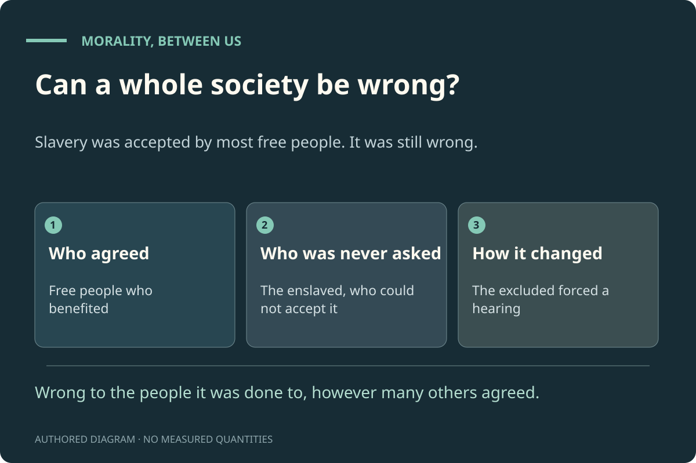
Can a whole society be wrong?. Slavery was accepted by most free people. It was still wrong. Wrong to the people it was done to, however many others agreed. Authored diagram; it shows no measured quantities or simulated outcomes.
05 · Can a Fair Agreement Be Terrible?
The hardest test: when everyone has a say, and the result is still wrong.
Last room: slavery failed because it could not be justified to the people enslaved. But suppose everyone affected was heard, freely and fairly, and they still agreed to something terrible. Objectivists say only an objective limit can stop that. This is where the exhibit’s claim is weakest.
The situation
Jones is working in the transmitter room of a TV station during the World Cup final. Equipment falls on him; he is getting painful electric shocks. Rescuing him means switching off the broadcast for fifteen minutes, and millions of people would miss part of the match. Suppose, to make it as hard as possible, that the viewers could vote, fully informed and under no pressure, and a huge majority voted to keep the broadcast on. (The case is T. M. Scanlon’s; the vote is added here.)
The case for needing the fact: only an objective limit stops this For objectivity
If what is right is settled by reasons people could accept, and nearly everyone accepts keeping the broadcast on, what is wrong with it? Objectivists answer: Jones’s suffering matters objectively, and no number of viewers’ enjoyment outweighs it. That limit holds whatever the vote says. If the reasons-between-people view also rejects the vote, the objectivist asks what it is relying on, if not an objective fact.
The answer without it: compare complaints one person at a time Without objectivity
Scanlon’s answer is that we don’t add up the viewers. We compare the strongest complaint each person could make. Jones can say: “You left me in agony for an hour.” Each viewer can say only: “I missed fifteen minutes of a match.” No single viewer’s complaint comes close to his, so no viewer could reasonably reject a rule that says “rescue him”. A vote counts heads. Justification has to answer each person, so a fair process is not the same as a vote.
Is that rule an objective fact in disguise? Still open
An honest answer: maybe. Why compare one person at a time instead of adding up? Objectivists say that rule must itself be objectively true. The reply from the other side: it is the rule anyone would insist on once they imagine being Jones. No one could accept a system that lets them be sacrificed for other people’s small pleasures. If that reply works, no objective fact is needed. If it doesn’t, this job needs one, and the claim has to be narrowed to “reasons between people do the work, with some objective limits underneath”. Parfit thought Scanlon’s rule could not avoid relying on objective reasons; the question remains open.
No. Wait until the match ends; the total enjoyment is too great.You add up benefits across people. A serious view, but it leaves Jones in agony.
You add up benefits across people, as some utilitarians do. Jones can object that he is being sacrificed for other people’s small pleasures. You will need an answer for him.
Do what the fair vote says.You let the fair vote decide. Room 04’s test said the people affected must be able to accept a decision.
If the vote says keep broadcasting, you accept that. Then neither the objectivist nor the reasons-between-people view agrees with you: both say the vote doesn’t settle what is owed to Jones.
The exhibits give the two main reasons people give for rescuing him.
Follow-up question. Shown if you answered “Should the broadcast be stopped to rescue Jones?” → “Yes. Rescue him now.”.
You would rescue Jones, though nearly everyone voted to keep watching. Why?
This is the key question of the room. Your reason shows whether you are relying on an objective fact, on comparing complaints person by person, or on a strong feeling.
Because his suffering objectively outweighs their enjoyment, whatever anyone thinks.You rely on an objective fact about how harms compare.
This is the objectivist answer, and it is coherent. It means this job, at least, uses an objective fact. If you said at the start that there are no objective moral facts, the tool will point out the tension.
Because his complaint is far stronger than any one viewer’s, and a vote doesn’t answer him.You compare complaints person by person. No objective fact is used, unless the comparison rule itself is one.
This is Scanlon’s answer. It explains the rescue without adding up the viewers. The open question (exhibit 4) is whether the rule “compare one person at a time” is itself an objective fact in disguise.
Because leaving him there just feels monstrous.You rely on a strong reaction. You’d need a reason to offer a viewer who disagrees.
A strong reaction is a signal worth taking seriously (room 01). But a viewer who voted to keep watching will ask for a reason. Both of the other answers are attempts to give one.
Any of these would do; they all point the same way.You don’t need to choose a ground for this case.
In this case they agree. They come apart in harder cases, which is why the next question asks whether this job needs objective facts.
Ledger · Ruling out terrible agreements
To rule out terrible agreements like this one, do we need objective moral facts?
This is the job where the exhibit’s claim is weakest. Answer honestly: the claim narrows if you say yes.
Yes. “Compare complaints one at a time” only works because some limit holds objectively.Ledger: needed. The claim narrows: reasons between people, with some objective limits underneath.
This is the strongest point against the exhibit’s claim, and the exhibit accepts it may be right. If so, the honest conclusion is narrower: objective limits at the edges, reasons between people for everything else.
That’s a legitimate answer. It will show on your ledger as an open question.
Principles in this room
Opening statement tested here: “It can be right to cause one person serious harm if it gives small benefits to very many people.” Agreeing pre-selects one principle below; disagreeing pre-selects the other.
Numbers count
“When enough people gain, a serious cost to one person can be justified.”
Adding up benefits is a serious view, held by many utilitarians. Keeping it means it will be shown beside later decisions it bears on, with a note when an answer fits it or pulls against it.
Pre-selected if you agree with the opening statement above.
“I won’t let many small gains settle a terrible loss for one person.”
Scanlon’s idea: compare complaints one person at a time. Keeping it means it will be shown beside later decisions it bears on, with a note when an answer fits it or pulls against it.
Pre-selected if you disagree with the opening statement above.
“I test a rule by imagining I am the person it costs most.”
A way of checking whether a rule could be justified to everyone. Keeping it means it will be shown beside later decisions it bears on, with a note when an answer fits it or pulls against it.
Comparing complaints person by person explains why the vote does not settle what is owed to Jones. Whether that comparison rule is itself an objective fact is the most serious open question for the exhibit’s claim. If it is, the claim should be narrowed, not abandoned.
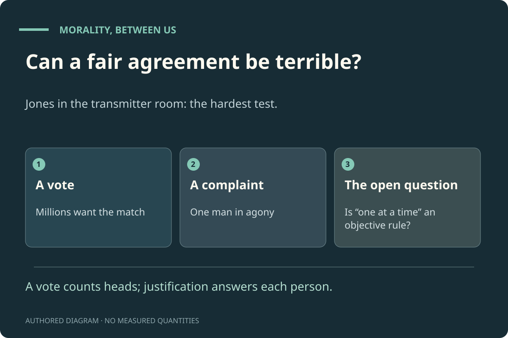
Can a fair agreement be terrible?. Jones in the transmitter room: the hardest test. A vote counts heads; justification answers each person. Authored diagram; it shows no measured quantities or simulated outcomes.
06 · Why Should Someone Who Doesn’t Care Listen?
Reasons, motivation and protection.
Last room: comparing complaints may rule out terrible agreements. But all of this assumes people care about giving reasons. What about someone who simply doesn’t?
The situation
A powerful official profits from a scheme that ruins thousands of people. He understands every argument against it. He says: “I can see they could never accept this. I don’t care. Nothing you say gives me a reason to stop.”
The case for needing the fact: he has a reason whether he cares or not For objectivity
Objectivists say the official has a reason to stop that holds whether or not he cares, just as the facts of arithmetic hold whether or not he can count. Without objective facts, they say, morality binds only those who already sign up. Parfit argued that some reasons, such as the reason to avoid causing agony, do not depend on anyone’s desires.
The answer without it: what changes if he “has a reason” he ignores? Without objectivity
Bernard Williams argued that a reason is only a reason for someone if it connects with something they care about, or could come to care about by thinking clearly. Notice what the objectivist’s answer actually achieves: the official still doesn’t stop. An objective reason he ignores and a reason he ignores move him equally little. What protects the victims, on either view, is the same: other people who do care (courts, voters, colleagues, journalists), acting on the fact that he cannot justify himself to anyone he harms. Christine Korsgaard goes further: anyone who acts for reasons already treats their own humanity as valuable, and cannot consistently treat other people’s as worthless.
The objectivist can say something the other view can’t: “He is making a mistake about the facts.” The reasons-between-people view says instead: “He has no answer to his victims, and we are entitled to stop him.” Whether the first sentence adds anything real, or only sounds stronger, is the open question. In practice the protections are the same.
“This will catch up with you.”You appeal to his self-interest: a pressure, not a moral reason.
It might work. Notice that both other answers also need something like this, such as courts, voters or the press, to actually stop him.
“You may have no reason to stop. We have every reason to stop you.”You accept that he may have no reason of his own, and focus on protection.
This is close to Bernard Williams’s view: reasons have to connect with what a person cares about. It gives up saying he has a reason, and keeps everything practical.
Ledger · Holding to account someone who doesn’t care
To say the official is doing wrong even though he doesn’t care, do we need objective moral facts?
Neither answer makes him stop. The question is what saying “wrong” requires.
Yes. Without them, “wrong” only applies to people who already accept morality.Ledger: needed. You’ll need to say what the objective reason does that the other answer doesn’t.
This is the objectivist position. The challenge: since neither view moves him, say what the objective reason adds.
I don’t know. It feels like finding an answer, but maybe it’s defending one.You leave it open.
Room 10 takes this up directly.
Principles in this room
Opening statement tested here: “Someone who doesn’t care about morality is still bound by it.” Agreeing pre-selects one principle below; disagreeing pre-selects the other.
Morality binds everyone
“Moral reasons apply to people whether or not they care about them.”
Both objectivists and the reasons-between-people view can hold this, in different ways. Keeping it means it will be shown beside later decisions it bears on, with a note when an answer fits it or pulls against it.
Pre-selected if you agree with the opening statement above.
“A reason only counts for someone if it connects with something they care about, or could come to care about.”
This is Bernard Williams’s view. Keeping it means it will be shown beside later decisions it bears on, with a note when an answer fits it or pulls against it.
Pre-selected if you disagree with the opening statement above.
“When someone won’t listen to reasons, I still act to protect the people they harm.”
On any view, protection doesn’t wait for the wrongdoer to agree. Keeping it means it will be shown beside later decisions it bears on, with a note when an answer fits it or pulls against it.
Neither view can make the official care. Both say he is in the wrong, and both rely on others to stop him. The objectivist adds that he is mistaken about a fact. Whether that adds anything beyond emphasis is open; it changes nothing about what we may do to protect his victims.
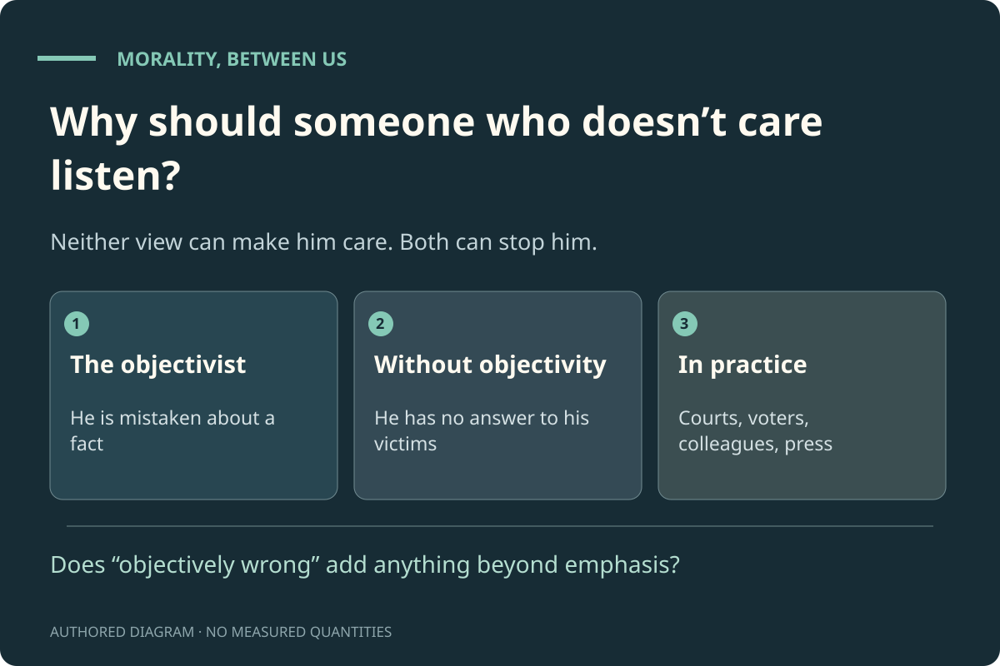
Why should someone who doesn’t care listen?. Neither view can make him care. Both can stop him. Does “objectively wrong” add anything beyond emphasis? Authored diagram; it shows no measured quantities or simulated outcomes.
07 · Case: Tuskegee and Consent · CASE STUDY
Whose body bears the cost, and who decides?
Rooms 01 to 06 tested the claim in principle. The next three rooms test it on real cases. In each, notice the pressures, compare the reasons, decide, and then ask whether you needed an objective fact anywhere.
The situation
From 1932 to 1972, the U.S. Public Health Service studied untreated syphilis in 600 Black men in Alabama. The men were not told the truth and did not give informed consent. When penicillin became the standard treatment, it was withheld from them so the study could continue.
Case study
The USPHS study at Tuskegee
A historical case, followed by an invented decision about a modern study. The exercise never asks you to defend what happened.
Case fact
The study ran from 1932 to 1972; the men’s informed consent was not obtained.
A new study offers a risky experimental treatment. It pays well, and some volunteers are poor. A competent adult understands the risks and wants to join. Should the review board let them?
Allow it with strong safeguards
Respects the person’s choice; the board must check that payment isn’t doing the choosing.
Require a safer design first
Protects volunteers; delays the research and overrides some people’s informed choice.
Cap the payment
Reduces pressure on poor volunteers; may make the study less attractive to everyone.
A principle becomes useful when the people it protects can invoke it against an institution.
What this case does and does not show
The historical facts do not settle the deeper question of what grounds the principles. The modern study is invented and offers no medical advice.
The U.S. Public Health Service study at Tuskegee ran from 1932 to 1972 and involved 600 Black men. Informed consent was not obtained. After penicillin became the standard treatment for syphilis, it was not offered to the participants. The study ended in 1972 after it was exposed in the national press.
Our analysis, not a finding from the sources: several pressures were at work. Institutional authority meant that doctors deferred to the Public Health Service. Racial prejudice made the men’s lives count for less with the researchers. Distance between researchers and the men they studied made the harm easy to ignore. Momentum meant a long-running project that nobody wanted to be the one to stop. None of these is a reason. All of them pushed judgment.
Ask what the researchers could have said to the men themselves: “We are withholding a cure from you so we can watch the disease progress.” No one in their position could accept that. The Belmont Report (1979), written in response to abuses like this one, sets out three principles: respect for persons, beneficence and justice. They can be read either as objective truths or as the conditions under which research can be justified to the people in it. Both readings condemn the study.
Follow-up question. Shown if you answered “A modern study pays well, and some volunteers are poor. A competent adult understands the risks and wants to join. What should the review board do?” → “Allow it, with strong safeguards and checks that people understand.” or “Require a safer design first, even if that delays the research.” or “Let the adult decide. It is their body.” or “Cap the payment, so money can’t push people who are struggling.”.
Halfway through the study, a participant asks for their data to be deleted. Deleting it will weaken the results for everyone else. What should happen?
An invented continuation. The participant was told at the start that they could withdraw, but the form did not say whether data already collected would be deleted.
Delete it. Their say over their own information comes first.You put the participant’s control first, at a cost to the study.
This protects the participant’s say over what happens to them. The cost falls on the research and on future patients, and you accept that.
Keep it. They agreed to take part, and the data is already collected.You put the study’s reliability first.
This protects the value of everyone else’s participation. The participant can object that they were never told their data would be kept after withdrawing. That complaint is hard to answer.
It depends on what they were led to believe at the start.You make the answer turn on what was promised.
A reasonable answer. Since the form was silent, ask what a reasonable participant would have understood. Most would have assumed withdrawal meant their data too.
That’s a legitimate answer. It will show on your ledger as an open question.
Principles in this room
Opening statement tested here: “Adults should be free to take serious risks with their own bodies, even when experts think it unwise.” Agreeing pre-selects one principle below; disagreeing pre-selects the other.
Their body, their call
“Informed adults may accept serious risks for themselves.”
Respect for persons, in Belmont’s terms. Keeping it means it will be shown beside later decisions it bears on, with a note when an answer fits it or pulls against it.
Pre-selected if you agree with the opening statement above.
“Where risk is serious, protecting people comes before their choice.”
Beneficence, in Belmont’s terms. Keeping it means it will be shown beside later decisions it bears on, with a note when an answer fits it or pulls against it.
Pre-selected if you disagree with the opening statement above.
“I ask whether payment is helping a choice or pushing it.”
Payment can be fair compensation or an undue pressure on people with little money. Keeping it means it will be shown beside later decisions it bears on, with a note when an answer fits it or pulls against it.
Tuskegee is wrong on every serious view. What the case shows is how the wrong happened: pressures let researchers ignore what they could never have justified to the men themselves. Saying it was wrong does not seem to need more than that.
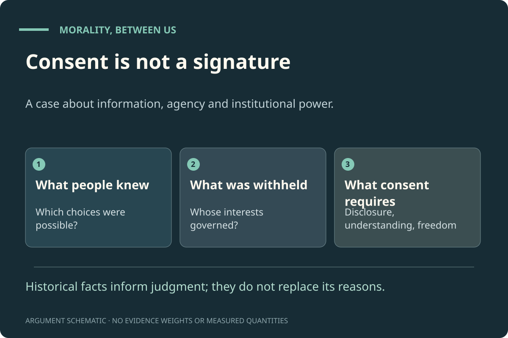
Case: Tuskegee and consent. What the men were never told, and why it went on. Historical facts from the CDC record; the analysis of pressures is ours. Authored diagram; it shows no measured quantities or simulated outcomes.
08 · Case: What Is Punishment For? · CASE STUDY
Evidence, anger and what can be justified to whom.
Second case. Punishment is where strong feelings and evidence meet. Again: notice the pressures, compare the reasons, decide, and ask whether you needed an objective fact.
The situation
A Norwegian study used the fact that court cases are assigned to judges who differ in strictness. Comparing similar defendants, it found that prison reduced later reoffending, mostly among people who had not been working before. A justice committee elsewhere must now decide what its prisons are for.
Case study
Prison, reoffending and work in Norway
A published study, followed by an invented policy decision. It is about system-wide policy, not advice on any individual sentence.
Case fact
Similar defendants who got stricter judges reoffended less afterwards, mostly those who had not been working.
A justice committee must decide whether its prisons should aim mainly at rehabilitation, at giving people what they deserve, or at using alternatives to prison where possible.
Rehabilitation and preventing future harm first
Needs good evidence and limits on how much liberty can be taken for others’ benefit.
What is deserved first
Must explain which hardships are deserved, and why extra hardship that prevents nothing is justified.
Try alternatives to prison
Protects liberty where possible; needs evidence that the public is still protected.
Public justification exposes both the forecast and the value that makes the forecast matter.
What this case does and does not show
A natural experiment depends on its assumptions and its population. This study does not settle the ethics of punishment.
Bhuller and colleagues compared similar defendants who happened to get stricter or more lenient judges. Prison reduced later reoffending, mainly among people who had not been working beforehand; defendants who had been employed tended to lose their jobs. The limits matter. This is one country with unusual prisons. The study does not single out one prison programme, does not tell us the effect of longer sentences, and does not carry over automatically to other countries.
Anger at the offender, fear of crime, the wish to see victims recognised, and political pressure to look tough all push towards more severity. Anger is not irrational: it signals that a wrong was done. But psychology suggests that moral judgments often come from quick intuitions first, with reasons found afterwards (Haidt). The question is whether the severity anger asks for can be justified.
A sentence has to be justifiable to the victim, to people who might be harmed in future, and to the offender, who keeps a claim not to suffer more than can be justified. Desert, protection and rehabilitation are reasons that different people might give. Objectivists say what someone deserves is an objective fact. The alternative says desert is part of what could be justified to everyone, the offender included.
It proves that a particular prison job programme caused the drop in reoffending.You attribute the effect to one programme.
This step doesn’t follow. The study isn’t built to show that. It compared stricter and more lenient judges, not people randomly given one programme. It suggests possible causes but doesn’t single one out.
It shows longer sentences in my country would cut crime.You transfer the result to a different country and a different question.
This step doesn’t follow. This step doesn’t follow. Other countries have different prisons and populations, and the study did not measure the effect of longer sentences.
A victim asks for a longer sentence. Separate local evidence, invented for this exercise, says the extra time would prevent no further crime. What should the judge do?
This is not a finding of the Norway study. Take the victim seriously and consider what the state may impose.
No extra time without a further reason; recognise the victim in other ways.You require a purpose for extra punishment.
You separate the victim’s real grievance from what the state may impose. You will need a reply for the victim who says the sentence doesn’t match the wrong.
Focus on repair and recognition (an apology, compensation, being heard) alongside a justified sentence.You meet the victim’s claim without extra prison time.
This answers the victim without treating severity as the only form of recognition. It depends on whether the victim wants repair.
That’s a legitimate answer. It will show on your ledger as an open question.
Principles in this room
Opening statement tested here: “Wrongdoers should get what they deserve, even if punishing them prevents no future harm.” Agreeing pre-selects one principle below; disagreeing pre-selects the other.
What is deserved
“Wrongdoers should get what they deserve, whether or not it prevents harm.”
A serious view of justice, not only a feeling. Keeping it means it will be shown beside later decisions it bears on, with a note when an answer fits it or pulls against it.
Pre-selected if you agree with the opening statement above.
“Punishment must achieve something (protection, repair or change) to be justified.”
A forward-looking view of punishment. Keeping it means it will be shown beside later decisions it bears on, with a note when an answer fits it or pulls against it.
Pre-selected if you disagree with the opening statement above.
“Punishment must be justifiable to the person punished, too.”
Someone who did wrong keeps a claim not to suffer more than can be justified. Keeping it means it will be shown beside later decisions it bears on, with a note when an answer fits it or pulls against it.
Evidence can change what a punishment achieves; it cannot by itself say what punishment is for. That question was answered here by reasons the victim, the public and the offender could each be offered. Whether desert is an objective fact is the one place an objectivist may find work in this case.
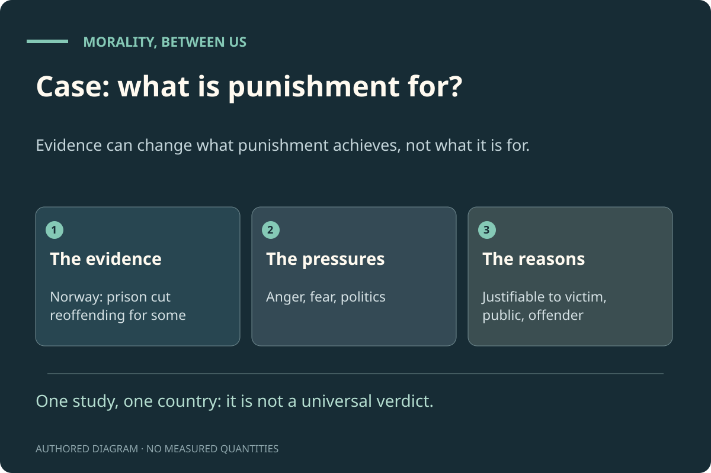
Case: what is punishment for?. Evidence can change what punishment achieves, not what it is for. One study, one country: it is not a universal verdict. Authored diagram; it shows no measured quantities or simulated outcomes.
09 · Case: The Ozone Layer and People Not Yet Born · CASE STUDY
A success story, and the hardest question about who counts.
Third case: one where cooperation worked, and which raises the hardest question for the reasons-between-people view: what about people who cannot take part?
The situation
In 1987, countries agreed in the Montreal Protocol to phase out chemicals destroying the ozone layer. Richer countries paid into a fund to help poorer ones switch. The ozone layer is now recovering. Most of the people protected were not yet born when the decisions were made.
Case study
The Montreal Protocol and the ozone layer
A real international agreement, followed by an invented decision about sharing the cost of a further phase-out.
Case fact
The 2022 assessment finds the Protocol effective, with ozone projected to recover over coming decades.
The 2022 scientific assessment reports that the Montreal Protocol “continues to be effective” at reducing ozone-destroying chemicals. Ozone is projected to return to 1980 levels around 2066 over the Antarctic, 2045 over the Arctic and 2040 for the near-global average, under a middle-of-the-road scenario. Evidence of recovery outside the Antarctic is still weak. Under Article 10 of the treaty, richer countries pay the extra costs poorer countries face in switching.
Pressures against action: costs now and benefits later, industry interests, and the distance in time and place between those who pay and those who benefit. What helped: everyone was exposed to the same danger, the science was clear enough, substitutes existed, and the fund made the burden fairer for poorer countries.
The reasons-between-people view says what we owe is what we could justify to those affected. Future people cannot hear our reasons or object. Worse, Derek Parfit’s “non-identity problem”: different policies change who will be born, so people born under a policy cannot say it made them worse off, since otherwise they would not exist. Objectivists say we need an objective fact, “suffering is bad, whoever bears it”, to explain our duties to the future. The reply: we can justify ourselves to future people whoever they turn out to be. “You chose this when you could have done better for whoever came after” is a complaint any of them could make. Whether that fully works is an open question, and the same difficulty arises for animals.
The ozone layer has already fully recovered everywhere.You overstate the findings.
This step doesn’t follow. The assessment says recovery is projected for 2040 to 2066 depending on region, and that evidence outside the Antarctic is still weak. This claim goes well beyond it.
It proves the treaty was morally right.You treat the science as settling the moral question.
This step doesn’t follow. This step doesn’t follow. The science shows what happened to the ozone layer. Whether the costs were fairly shared is a separate question.
Follow-up question. Shown if you answered “A poorer country says: “We didn’t cause this, and we can’t afford to switch now.” Who should pay?” → “Those who caused the problem.” or “Those best able to afford it.” or “Everyone equally, with exceptions for real hardship.” or “A shared fund paid mostly by richer countries, as the treaty did.”.
The only plan that can start this year would push some very poor households below what they need for food and heating for a year. Waiting a year causes serious, lasting damage to other people later. What now?
An invented hard choice, not a fact about the Montreal Protocol. There is no cost-free option.
Wait. Don’t push people below basic needs, even for a lasting benefit.You protect the worst off now, accepting lasting harm to others later.
You put present basic needs first. The people harmed later have a complaint too, and you will need to answer it.
Go ahead, and compensate the households as fast as possible.You act now and promise repair. A promise isn’t protection unless it is funded.
This tries to meet both claims. It works only if the compensation is real and quick.
Go ahead. The lasting damage matters more than a hard year.You give the future full weight, at a serious cost to people now.
You treat lasting future harm as weightier. The households pushed below basic needs have a strong complaint, and you will need to answer it.
I’d refuse to accept the choice and look harder for a plan that avoids both harms.You challenge the claim that no better option exists.
In real life, always worth doing. If no better plan exists, the hard choice is still there.
Do people not yet born have a claim on us now?
This is the hardest question for the reasons-between-people view. Read “Who has to be convinced?” first if you haven’t.
Yes. Whoever is born will be able to say we could have done better for them.You extend reasons between people to whoever comes after.
This is the best answer available without objective facts. It sidesteps the non-identity problem by talking to whoever exists rather than to particular people. Whether it fully works is open.
That’s a legitimate answer. It will show on your ledger as an open question.
Principles in this room
Opening statement tested here: “People not yet born matter as much as people alive today.” Agreeing pre-selects one principle below; disagreeing pre-selects the other.
The future counts fully
“People not yet born matter as much as people alive today.”
No discount just for being later. Keeping it means it will be shown beside later decisions it bears on, with a note when an answer fits it or pulls against it.
Pre-selected if you agree with the opening statement above.
“People alive now, especially the worst off, come before people not yet born.”
A view about urgency and the certainty of present need. Keeping it means it will be shown beside later decisions it bears on, with a note when an answer fits it or pulls against it.
Pre-selected if you disagree with the opening statement above.
“Those who caused a problem, or can best afford to fix it, should carry more of the cost.”
The idea behind the Montreal Protocol’s fund. Keeping it means it will be shown beside later decisions it bears on, with a note when an answer fits it or pulls against it.
Cooperation on ozone worked through shared danger and a fairer sharing of costs, and needed no agreement about objective facts. But duties to people not yet born are where the reasons-between-people view is weakest. Its answer, justifying ourselves to whoever comes after, is plausible but not decisive.
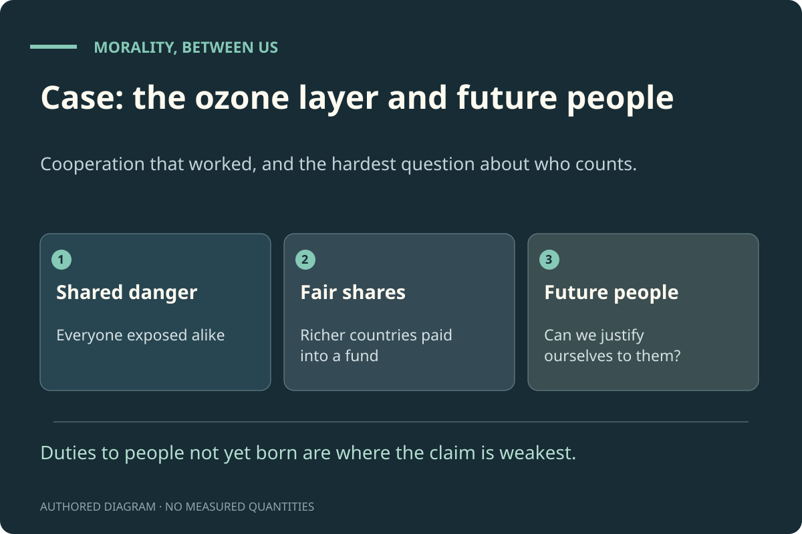
Case: the ozone layer and future people. Cooperation that worked, and the hardest question about who counts. Duties to people not yet born are where the claim is weakest. Authored diagram; it shows no measured quantities or simulated outcomes.
10 · Objections That Remain
The strongest arguments against the claim, and what is left after the replies.
You have now seen the claim tested job by job. This room collects the ten strongest objections to it, gives the best reply available, and says what each reply leaves unanswered.
The situation
Ten objections, each in an alcove: the objection, the best reply, and what still needs an answer. Some come from objectivists, some from critics of every view.
1. When I decide, I’m looking for the right answer
The objection: When I deliberate about what to do, I am trying to find the answer, not make one up. That only makes sense if there is an answer to find, independent of me (Enoch).
The best reply: Searching for something isn’t the same as there being an objective fact to find. Chess players search for the best move, and there is one, but it is set by the rules of a game people made. Looking for an answer you could defend to everyone affected is also a search with better and worse results.
What still needs an answer: If deliberation really does presuppose objective reasons, the claim fails for private decisions. Whether the chess comparison holds for moral deliberation is disputed (Joyce replies to Enoch).
The objection: If there are no objective moral reasons, there are no objective reasons to believe anything either, including the arguments in this exhibit. Moral and epistemic reasons stand or fall together (Cuneo).
The best reply: The claim is narrower: that we don’t need objective moral facts to settle how we treat each other. Reasons to believe can be grounded in what any inquirer must accept in order to inquire at all, which is a different basis from objective moral facts.
What still needs an answer: The exhibit owes an account of why reasons for belief and reasons for action differ. That account is not given here.
The objection: Saying “nothing is objectively wrong” is itself a moral claim. You can’t step outside morality to judge it (Dworkin).
The best reply: Agreed: this exhibit doesn’t step outside morality. It makes moral claims about what can be justified to people. Dworkin’s point actually supports dropping the word: if “objectively wrong” only repeats, with emphasis, that something is wrong, it adds no new fact.
What still needs an answer: If that is right, part of the dispute is about words. Objectivists will say “objective” marks a real difference that Dworkin’s reading hides.
The objection: Agony is bad in itself, not because anyone dislikes it or because of what people could accept. That is an objective fact if anything is (Parfit).
The best reply: Nobody affected could reasonably accept being left in agony for no reason, so the reasons-between-people view condemns it too. Whether its badness is “in itself” or “to the person suffering” makes no difference to what we must do.
What still needs an answer: If the badness of agony is an objective fact, then it is one objective fact the exhibit relies on, as room 05 suggests.
The objection: Over centuries, moral views have moved in one direction: against slavery, torture and cruelty to outsiders. Discovery of objective truths explains that best (Huemer).
The best reply: Anderson’s history offers another explanation: progress came when the excluded gained the power to make claims the powerful could not ignore. That explains the direction of change (towards including more people) without a hidden fact.
What still needs an answer: Both explanations fit the trend; neither has been shown to fit it better. The trend is also uneven.
The objection: Informed, free to object, treated as equals: these conditions are moral standards. Doesn’t the reasons-between-people view assume the very morality it claims to produce?
The best reply: Yes, it starts from moral commitments. Every view does, the objectivist included. The claim is not that morality comes from nothing. It is that its starting points are ones people can defend to each other, rather than facts beyond them.
What still needs an answer: If those starting points need objective backing, the claim narrows to “objective starting points, everything else worked out between people”.
The objection: Animals, babies and future people can’t hear reasons or object. A view built on justifying yourself to others seems to leave them out.
The best reply: We can justify ourselves to them as trustees would: by asking what anyone who took up their position could accept. Their interests count even though they cannot speak.
What still needs an answer: This is the view’s weakest point. Objectivists, who can say “suffering is bad whoever bears it”, may do better here (room 09).
8. If pressures shape judgment, agreement can be manufactured
The objection: If fear, loyalty and authority push judgment around, people can be pushed into agreeing to anything.
The best reply: That is why the test is what people could accept if informed and free, not what they do accept. Exposing pressures is part of the method, which is the point of pairing it with the Moral Topology model.
What still needs an answer: It is hard to know when a judgment is free enough. The method gives guidance, not certainty.
The objection: A person who has been harmed may be angry, or unable to put their experience into the language of reasons.
The best reply: Anger is evidence that something is wrong, and testimony is itself a reason. Justification means answering people, not grading their tone.
What still needs an answer: Hearing someone fairly and assessing their claims are both needed. Getting the balance right is a practical skill, not a formula.
10. Isn’t “we don’t need objective facts” just saying morality is made up?
The objection: If morality isn’t objective, it is invented, and invented rules can be changed by whoever has power.
The best reply: Made between people is not the same as made up. A promise, a language and a law are real and binding without being independent of everyone. And this view never lets the powerful decide: what counts is what the people affected could accept.
What still needs an answer: Mackie and Joyce argue that ordinary moral talk claims objectivity. If so, this exhibit recommends a change in what we mean by “wrong”, and should say so.
That’s a legitimate answer. It will show on your ledger as an open question.
Principles in this room
Opening statement tested here: “On hard moral questions, more than one answer can be reasonable.” Agreeing pre-selects one principle below; disagreeing pre-selects the other.
More than one answer
“On hard questions, more than one answer can be reasonable.”
David Wong’s pluralism; Rawls on reasonable disagreement. Keeping it means it will be shown beside later decisions it bears on, with a note when an answer fits it or pulls against it.
Pre-selected if you agree with the opening statement above.
“Every real moral question has one right answer, even if we can’t find it.”
A natural companion of objectivism. Keeping it means it will be shown beside later decisions it bears on, with a note when an answer fits it or pulls against it.
Pre-selected if you disagree with the opening statement above.
“I apply the hardest objections to my own view too.”
Equal scrutiny for both sides. Keeping it means it will be shown beside later decisions it bears on, with a note when an answer fits it or pulls against it.
Two objections are strongest: that our own reasoning seems to aim at objective answers (Enoch, Cuneo), and that “fair conditions” are already moral standards (circularity). The replies show the claim can survive both, but only as a claim about what we need, not as a proof that objective facts don’t exist.
Objections that remain. The strongest arguments against the claim, and what the replies leave. A claim earns trust by naming its weakest points. Authored diagram; it shows no measured quantities or simulated outcomes.
11 · Where Do You Stand?
Your ledger, your principles, and what has changed.
The last room puts your answers together: the ledger of jobs, your principles and how your decisions fitted them, and your answers to the opening questions, asked again.
The situation
Across the rooms you said, job by job, whether objective moral facts were needed. You also answered twelve value questions at the start. Here you can see both, answer the opening questions again, and compare.
Reading your ledger Definition
If you said “covered” for every job, then on your own reasoning objective moral facts are unnecessary, whether or not they exist. If you said “needed” for some jobs, you have found where the claim fails, and the honest conclusion is narrower: reasons between people do most of the work, with objective facts doing some. Neither result is a score. It is a map of where you think the work is done.
What this exhibit concludes Still open
For settling human moral conflicts, reasons between people plus an honest account of the pressures did the work in every job tested, with two weaker points. The first is limits on what a fair agreement may impose (room 05). The second is duties to those who cannot take part, such as future people and animals (room 09). In both, the answer without objective facts is plausible but not decisive. We do not claim objective moral facts don’t exist. We claim that nothing in how we should treat each other depends on knowing whether they do.
Reasons between people is not a machine. You still have to judge which reasons matter, which pressures are distorting you, and whose complaints you have left out. Responsibility stays with the person deciding. The test you can carry away is short: could I defend this to the people it affects, if they were informed, free to object and treated as equals? And what is pushing me?
Keep my view, but hold it more humbly.A change in confidence rather than content.
That is a real change too.
Principles in this room
Opening statement tested here: “A rule is only fair if I could explain it to the people it affects and they could reasonably accept it.” Agreeing pre-selects one principle below; disagreeing pre-selects the other.
Reasons I could defend
“I hold my choices to the test of what I could defend to the people they affect.”
The reasons-between-people view, applied to yourself. Keeping it means it will be shown beside later decisions it bears on, with a note when an answer fits it or pulls against it.
Pre-selected if you agree with the opening statement above.
“I can know what is right without having to justify it to anyone else.”
Conscience as a final authority. Keeping it means it will be shown beside later decisions it bears on, with a note when an answer fits it or pulls against it.
Pre-selected if you disagree with the opening statement above.
A view becomes testable when you can name what would change it. Keeping it means it will be shown beside later decisions it bears on, with a note when an answer fits it or pulls against it.
Where this room ends up
Whatever you concluded, you now know which jobs you think need objective moral facts, which of your opening values held up, and where your decisions pulled against them.
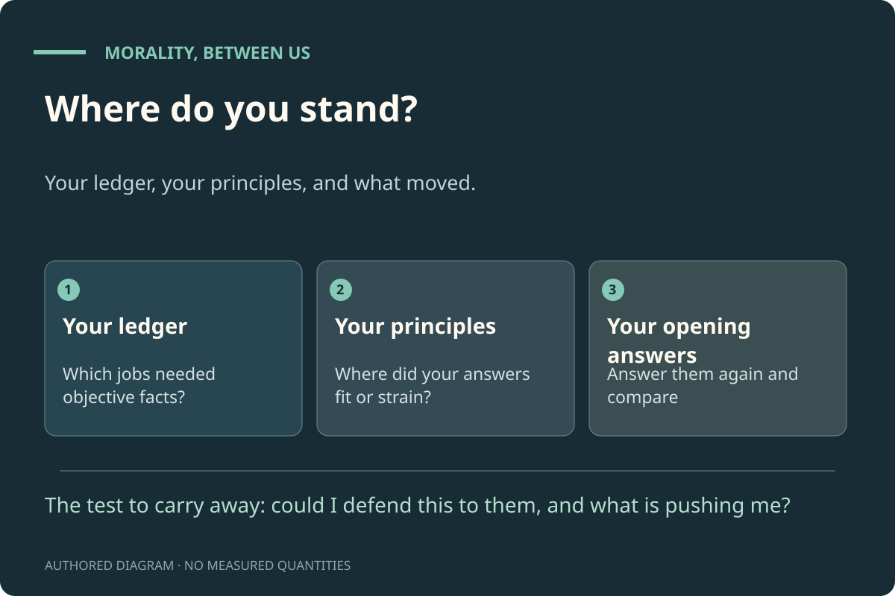
Where do you stand?. Your ledger, your principles, and what moved. The test to carry away: could I defend this to them, and what is pushing me? Authored diagram; it shows no measured quantities or simulated outcomes.
Your ledger
Ten questions across the rooms ask whether a particular job needs objective moral facts. Each answer is one of: needs objective facts; covered by reasons and pressures; partly; unsure. If any job truly needs objective facts, the exhibit’s claim fails there.
Only the combinations below are checked. They run in both directions: some test objectivist answers, some test the reasons-between-people view, some test relativism. You can revise an answer, say your view changed, explain a distinction, or keep both. An explanation is recorded, not graded.
A tension to look at
Evolved feelings and objective facts
You agreed with Street that evolution would make our feelings match objective moral facts only by luck. In the first room you also said that when you see cruelty you are seeing a moral fact. If the match between evolved feelings and objective facts would be luck, why trust this reaction to reveal one?
Scope: This is a real difficulty for objectivists, not a contradiction. Objectivists have replies: for example, that evolution tracked harms and benefits that line up with moral facts. You can choose that reply, change one answer, or say why the two fit.
Which answers trigger this
(“Suppose evolution shaped your feeling that cruelty is wrong. Does that make the feeling untrustworthy?” → “It is a good guide to what people like us can justify to each other, but it would be a lucky accident if it matched facts that hold whatever anyone thinks.”) AND (“You see teenagers set fire to a cat for fun. You immediately think: that’s wrong. What best explains why you think so?” → “I’m seeing a moral fact: the act really is wrong, whatever anyone thinks.”)
If agreement makes it right, slavery was right where it was agreed
In room 02 you said that if everyone approved of killing strangers for their cars, it would be right for them. In room 04 you said slavery was wrong even in societies where nearly every free person accepted it. If approval makes something right, approval of slavery made slavery right where it was approved.
Scope: This tests relativism: the view that a society’s agreement makes things right. A distinction is possible: for example, the enslaved people did not agree, so the society’s agreement was never everyone’s. If that is your reason, say so; it is the reasons-between-people view.
Which answers trigger this
(“Imagine everyone alive came to approve of killing strangers for their cars. Would it then be right?” → “Yes. If everyone approved, it would be right for them.”) AND (“Was slavery wrong in societies where nearly every free person accepted it?” → “Yes, because it was objectively wrong, whatever anyone thought.” or “Yes, because it could never have been justified to the people enslaved.”)
Justifiable to those affected, or decided by a vote?
In room 04 you said slavery was wrong because it could never be justified to the people enslaved, however many others accepted it. In room 05 you let a fair vote decide, even though the vote cannot be justified to Jones.
Scope: You may see a difference: the vote was free and fair, and slavery was not. But Jones still could not accept the result, which was your test in room 04. Say which test you are using.
Which answers trigger this
(“Was slavery wrong in societies where nearly every free person accepted it?” → “Yes, because it could never have been justified to the people enslaved.”) AND (“Should the broadcast be stopped to rescue Jones?” → “Do what the fair vote says.”)
At the start you said there are no objective moral facts. In the Jones case you rescued him because his suffering “objectively outweighs” the viewers’ enjoyment, whatever anyone thinks.
Scope: Changing your mind is allowed: this case may have convinced you that one job needs an objective fact. If so, record it; that is exactly the evidence the exhibit asks for.
Which answers trigger this
(“Before you begin: what do you think now about objective moral facts?” → “There are no objective moral facts. People make morality.”) AND (“You would rescue Jones, though nearly everyone voted to keep watching. Why?” → “Because his suffering objectively outweighs their enjoyment, whatever anyone thinks.”)
In the first room you said one neighbour is right even if no one can ever show it. In room 03 you said the town should find out which side is objectively right and act on it. If no one can ever show it, how would the town find out?
Scope: Not a contradiction if you think we can sometimes find out. Then say how: what would tell the town which side sees the moral fact?
Which answers trigger this
(“Back to the two neighbours. If neither can convince the other, what then?” → “One of them is still right, even if no one can ever show it.”) AND (“Suppose that after every pressure is exposed and every reason heard, the residents still disagree. What should the town do?” → “Find out which side is objectively right, and do that.”)
Enough without objective facts here, but not there
In room 04 you said the people affected were enough to make slavery wrong, with no objective fact needed. In room 05 you relied on an objective fact to rescue Jones.
Scope: The cases may differ: room 05 is where the exhibit itself admits the reasons-between-people view is weakest. If that is your reason, record it. It narrows the claim rather than refuting it.
Which answers trigger this
(“To say a whole society was wrong, do we need objective moral facts?” → “No. The people it was done to are enough: it could never be justified to them.”) AND (“You would rescue Jones, though nearly everyone voted to keep watching. Why?” → “Because his suffering objectively outweighs their enjoyment, whatever anyone thinks.”)
Each entry says what the source is used for, how it was consulted for this edition, and what it cannot show. Where a summary is written from knowledge of a work rather than a fresh reading, it says so.
Gilbert Harman · 1977 · Philosophy book · Oxford University Press; chapter 1 (the cat-burning example)
Argues that we never need moral facts to explain why people make the moral judgments they make: the situation plus the observer’s psychology and upbringing are enough.
Consulted: Not re-read for this edition. The summary is written from knowledge of the work; publication details were checked on 28 October 2026. Limits: Harman’s argument concerns explanation. It does not by itself show that moral judgments are mistaken, and Harman himself did not conclude that morality is worthless.
Nicholas Sturgeon · 1985 · Philosophy article (via teaching handout) · In Copp and Zimmerman (eds), Morality, Reason and Truth, pp. 49–78; summarised in an MIT OpenCourseWare handout
Replies to Harman: moral facts do appear in good explanations (“Hitler acted as he did because he was depraved”; opposition to slavery grew because slavery was so bad). If Harman’s test rules out moral facts, it rules out some physical facts too.
Consulted: The MIT handout, which quotes and paraphrases the essay, was read for this edition. The original volume was not consulted. Limits: A reply about explanation, not a full defence of objectivism. The explanations Sturgeon gives can arguably be restated without the moral fact.
Argues that the long historical trend towards liberal values (against slavery, torture and cruelty to outsiders) is best explained by people gradually recognising objective moral truths.
Consulted: Not re-read for this edition. The summary is written from knowledge of the work; publication details were checked on 28 October 2026. Limits: The trend is uneven and contested, and other explanations of it exist (see Anderson 2016).
Evolution shaped our evaluative reactions for survival and cooperation. If objective moral facts exist independently of those reactions, it would be a coincidence for the reactions to match them. A view on which moral truths depend on our considered attitudes avoids the coincidence.
Consulted: Full article available; selected sections were read for earlier editions. Limits: Where a belief comes from does not by itself make it false. Objectivists have replies (for example, that evolution tracked harms and benefits that line up with moral facts).
Peter Railton · 1986 · Philosophy article · The Philosophical Review 95(2), 163–207
A naturalist form of objectivism: moral facts are facts about what is good for people, given full information, so whole societies can be mistaken.
Consulted: Full article available; selected sections were read for earlier editions. Limits: A serious objectivist position that keeps morality tied to human interests. It is a rival, not a caricature.
J. L. Mackie · 1977 · Philosophy book · Penguin; chapter 1 (the arguments from relativity and “queerness”)
Argues that there are no objective values: moral disagreement is better explained by different ways of life, and objective values would be unlike anything else we know of. Mackie still defends a practical morality.
Consulted: Not re-read for this edition. The summary is written from knowledge of the work; publication details were checked on 28 October 2026. Limits: Mackie thinks ordinary moral talk claims objectivity and is therefore partly in error. The exhibit takes a different line: it keeps moral talk and drops the objective claim.
Richard Joyce · 2024 · Philosophy encyclopedia entry · International Encyclopedia of Ethics; author manuscript, pp. 1–3 and 6–7
An error theorist denies that moral properties exist. That is not the same as thinking everything is permitted or that nothing is worth opposing.
Consulted: Author manuscript; selected passages were read for earlier editions. Limits: The author site labels papers as drafts; consult the published version for the definitive text.
Simon Blackburn · 1998 · Philosophy book · Oxford University Press
Argues that moral judgments express attitudes, yet we can still say, and mean, “cruelty would be wrong even if everyone approved of it”: that is itself a moral judgment about cruelty, not a report about approval.
Consulted: Not re-read for this edition. The summary is written from knowledge of the work; publication details were checked on 28 October 2026. Limits: Whether this “quasi-realism” can say everything an objectivist says is disputed.
T. M. Scanlon · 1998 · Philosophy book · Harvard University Press; chapter 5 (the “transmitter room” case, p. 235) and the comparison of individual complaints
An act is wrong if it is disallowed by principles no one could reasonably reject. Complaints are compared one person at a time rather than added up, which is why a large number of small benefits cannot outweigh one person’s agony.
Consulted: Not re-read for this edition. The summary is written from knowledge of the work; publication details were checked on 28 October 2026. Limits: Scanlon himself relies on reasons he does not claim to construct, and he limits his account to “what we owe to each other”, not all of morality.
Jürgen Habermas · 1990 · Philosophy book · MIT Press; “Discourse Ethics: Notes on a Program of Philosophical Justification”
A moral rule is valid only if everyone affected could accept it in a free and fair discussion. This replaces an appeal to facts beyond people with an idealised conversation between them.
Consulted: Not re-read for this edition. The summary is written from knowledge of the work; publication details were checked on 28 October 2026. Limits: Critics ask whether the conditions of a “fair discussion” are themselves moral standards that need defending.
John Rawls · 1985 · Philosophy article (excerpts) · Philosophy & Public Affairs 14(3); excerpts on overlapping consensus
People who disagree about deep questions can still agree on fair terms for living together.
Consulted: Excerpts were read for earlier editions. Limits: Rawls deliberately sets aside the question of objective truth; this is not a full theory of morality.
David B. Wong · 2006 · Philosophy book · Oxford University Press
More than one morality can be adequate, but not every morality is: human nature and the job of enabling cooperation set limits.
Consulted: Not re-read for this edition. The summary is written from knowledge of the work; publication details were checked on 28 October 2026. Limits: Wong’s limits come from human nature and social function. Whether they are enough without objective facts is part of the debate.
Stanley Milgram · 1963 · Psychology study · Journal of Abnormal and Social Psychology 67(4), 371–378
Instructed by an experimenter, 26 of 40 participants continued to what they believed was the maximum electric shock to another person.
Consulted: Not re-read for this edition. The summary is written from knowledge of the work; publication details were checked on 28 October 2026. Limits: Methods and interpretation have been criticised, and the participants were a particular sample. It shows obedience can be a powerful pressure, not that everyone obeys.
John M. Darley and C. Daniel Batson · 1973 · Psychology study · Journal of Personality and Social Psychology 27(1), 100–108
Trainee ministers on their way to give a talk were far less likely to stop for a person in distress when told they were late than when told they had time.
Consulted: Not re-read for this edition. The summary is written from knowledge of the work; publication details were checked on 28 October 2026. Limits: A small study. It shows a situational pressure at work, not a general law.
Thomas F. Pettigrew and Linda R. Tropp · 2006 · Psychology meta-analysis · Journal of Personality and Social Psychology 90(5), 751–783
Across hundreds of studies, contact between groups is associated with reduced prejudice.
Consulted: Not re-read for this edition. The summary is written from knowledge of the work; publication details were checked on 28 October 2026. Limits: An association across many settings; the size of the effect varies with conditions.
Jesse Graham, Jonathan Haidt and Brian A. Nosek · 2009 · Psychology study · Journal of Personality and Social Psychology 96(5), 1029–1046
People across the political spectrum weigh concerns such as care, fairness, loyalty, authority and purity differently, which helps explain why they disagree.
Consulted: Not re-read for this edition. The summary is written from knowledge of the work; publication details were checked on 28 October 2026. Limits: Mostly samples from the United States; the framework and its measures are debated.
Moral judgments are often driven by quick intuitions, with reasoning following afterwards, frequently shaped by other people.
Consulted: Abstract was read for earlier editions. Limits: Does not show that reasoning never changes judgments, or that emotion discredits a judgment.
Elizabeth Anderson · 2016 · Philosophy chapter (author manuscript) · In Brady and Fricker (eds), The Epistemic Life of Groups, pp. 75–94; manuscript pp. 3 and 16–17
Argues that societies learn morally through contention (petitions, testimony, litigation, protest, revolt) by which the excluded force the powerful to answer their claims. “Power makes people morally blind.” She writes that “we do not already possess an independent standard of moral rightness”.
Consulted: Author manuscript; the method section and conclusion (manuscript pp. 3 and 16–17) were read for this edition. Limits: A historical and philosophical argument about how moral learning happens, built on case studies of abolition. It does not claim that every change brought about by contention is progress.
Oliver Scott Curry, Daniel Austin Mullins and Harvey Whitehouse · 2019 · Anthropology study · Current Anthropology 60(1), 47–69
Across 60 societies, behaviours that help cooperation (helping kin, helping your group, reciprocating, sharing, keeping promises, fairness, respecting property) are judged morally good.
Consulted: Selected sections were read for earlier editions. Limits: Based on coded ethnographic records; it describes what people value, not what they ought to value.
David Enoch · 2011 · Philosophy book · Oxford University Press; chapters 2 (the fairness argument) and 3 (deliberation)
Two arguments for objective moral facts: (1) if a moral disagreement were only a clash of preferences, there would be no fair way to resolve it; (2) when we deliberate we try to find answers, which presupposes there are answers to find.
Consulted: Publisher abstract and contents were read for earlier editions; the arguments are summarised from knowledge of the book. Limits: Both arguments are disputed (see Joyce 2014).
Derek Parfit · 2011 · Philosophy book · Oxford University Press; part 6 (normativity)
Argues that if there are no objective reasons, nothing truly matters; that agony is bad in itself, not only because it is disliked; and that views without objective reasons collapse into the claim that nothing matters.
Consulted: Not re-read for this edition. The summary is written from knowledge of the work; publication details were checked on 28 October 2026. Limits: Many philosophers reject Parfit’s claim that only objective reasons can make things matter.
Bernard Williams · 1981 · Philosophy essay · In Moral Luck, Cambridge University Press, pp. 101–113
A reason for someone to act must connect with something they care about, or could come to care about by thinking clearly. “External” reasons that bind regardless are doubtful.
Consulted: Not re-read for this edition. The summary is written from knowledge of the work; publication details were checked on 28 October 2026. Limits: Williams’s view is disputed; objectivists such as Parfit reject it.
Christine M. Korsgaard · 1996 · Philosophy book · Cambridge University Press; lectures 3–4
Moral obligation comes from the structure of choosing itself: anyone who acts for reasons must value their own humanity, and so cannot consistently treat others’ humanity as worthless.
Consulted: Not re-read for this edition. The summary is written from knowledge of the work; publication details were checked on 28 October 2026. Limits: The step from valuing my humanity to valuing everyone’s is heavily debated (see Enoch’s 2006 “Agency, Shmagency”).
Ronald Dworkin · 1996 · Philosophy article · Philosophy & Public Affairs 25(2), 87–139
Argues there is no neutral standpoint outside morality: the claim that “nothing is really wrong” is itself a moral claim. Saying cruelty is “objectively” wrong just repeats, with emphasis, that it is wrong.
Consulted: Not re-read for this edition. The summary is written from knowledge of the work; publication details were checked on 28 October 2026. Limits: Dworkin defends moral truth. His argument can be read as supporting either side here, because it makes “objective” add emphasis rather than a new kind of fact.
Terence Cuneo · 2007 · Philosophy book · Oxford University Press
“Companions in guilt”: moral reasons and reasons for belief are alike. If there are no objective moral reasons, there are no objective reasons to believe anything either, including the conclusions of this exhibit.
Consulted: Not re-read for this edition. The summary is written from knowledge of the work; publication details were checked on 28 October 2026. Limits: The argument depends on how close the analogy between moral and epistemic reasons really is.
Derek Parfit · 1984 · Philosophy book · Oxford University Press; part 4, chapter 16
Policies affect who will be born. People born under a policy cannot say it made them worse off, since otherwise they would not exist. This makes duties to future people hard to explain on person-to-person views.
Consulted: Not re-read for this edition. The summary is written from knowledge of the work; publication details were checked on 28 October 2026. Limits: A puzzle for every moral theory, not only for one.
National Commission for the Protection of Human Subjects of Biomedical and Behavioral Research · 1979 · Ethics report · Part B (respect for persons, beneficence, justice) and Part C (consent, risk, selection of subjects)
States three principles for research with people: respect for persons, beneficence and justice.
Consulted: The full text was read for earlier editions. Limits: An ethical framework. Its official status does not settle what grounds its principles.
Manudeep Bhuller, Gordon B. Dahl, Katrine V. Løken and Magne Mogstad · 2020 · Economics study · Journal of Political Economy 128(4), 1269–1324
In Norway, cases are assigned to judges who differ in strictness. Comparing similar defendants, prison reduced later reoffending, mostly among people who had not been working beforehand; previously employed defendants lost employment.
Consulted: Author manuscript; design, results and limitations sections were read for earlier editions. Limits: One country with unusual prisons. It does not single out one programme, estimate the effect of longer sentences, or transfer automatically to other systems.
World Meteorological Organization and the Scientific Assessment Panel · 2022 · Scientific assessment · Highlights and chapter 3 summary
The Montreal Protocol “continues to be effective” at reducing ozone-depleting substances. Ozone is projected to return to 1980 values around 2066 over the Antarctic, 2045 over the Arctic and 2040 for the near-global average, under a middle-of-the-road scenario.
Consulted: The highlights and projections were re-checked on 28 October 2026. Limits: Projections depend on future emissions and compliance. Outside the Antarctic, evidence of recovery in total ozone since 1996 has low confidence.
Oded Ritov, Christoph J. Völter, Nichola J. Raihani and Jan M. Engelmann · 2024 · Research study · Proceedings of the Royal Society B 291, 20241452
Pooling data from 23 studies across 18 species, finds no clear overall effect of unequal pay on refusals in this kind of task; refusals rose when better food was visible.
Consulted: Full text was read for earlier editions. Limits: A null result for one kind of task is not proof that no animal notices unfairness in any way.
Mayte Martínez and colleagues · 2026 · Research study · Proceedings of the Royal Society B 293, 20260397
Chimpanzees in group settings responded to unequal food, depending on food quality and social bonds.
Consulted: Selected methods, results and discussion were read for earlier editions. Limits: Six captive groups; social bonds were not experimentally assigned. Does not show a concept of justice.
Kia Radovanović and colleagues · 2025 · Research study · Proceedings of the Royal Society B 292, 20242873
Bonobos responded to unequal rewards even when a machine delivered them, which challenges the “disappointment with the experimenter” explanation.
Consulted: Methods, results and limitations were read for earlier editions. Limits: Small sample from one group; results only partly matched the unfairness prediction.
Bill Pepe, Brandon Woo, Ashley J. Thomas and Lindsey J. Powell · 2026 · Research study · PNAS 123, e2531771123
Infants of 14 to 15 months expected helpers to have caring relationships.
Consulted: Abstract and selected methods were read for earlier editions. Limits: A different age and measure from the 2025 replication; it shows neither that this is innate nor what is morally right.
About this exhibit
This is an authored argument for one side of a live philosophical debate. It gives the other side its strongest case in every room and says where its own claim is weakest. Its companion, the Moral Topology model, is a demonstration of how pressures on judgment can shift moral decisions; it is illustrative, not empirical.
The rooms and diagrams are symbolic settings. Historical and research facts are sourced; invented scenarios are labelled as invented.
Your answers, principles and notes stay in this page and are cleared when you reload it. You can download a private record. Nothing is sent anywhere; there are no accounts or analytics.